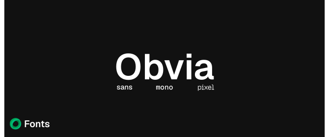
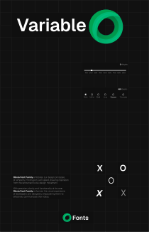

Created by Selçuk Çukur in collaboration with Obvia, it embodies their design principles of simplicity, minimalism, and speed, drawing inspiration from the renowned Swiss design movement.
With precision, clarity, and functionality at its core, Obvia Font Family enhances the visual experience of developers and designers, empowering them to effectively communicate their ideas.
Obvia Font Family is delivered as a modern variable type system, offering dynamic control across weight, grade, and optical size axes.
This flexibility allows designers and developers to fine‑tune typography for readability, hierarchy, and aesthetic balance in any context.
Both Roman and Italic styles are supported, ensuring consistency across text treatments and design environments.

A newly designed font family crafted for designers, developers, and storytellers who demand clarity and impact
Obvia Sans
A geometric sans-serif crafted for precision and readability. Rooted in Swiss modernist principles, it balances simplicity with strength, making it suitable for body text, headlines, branding, and large-scale display use.
Obvia Mono
A monospaced companion to Obvia Sans. Designed for technical contexts — code editors, diagrams, and terminal interfaces — it brings consistency and clarity to environments where structure matters most.
Obvia Pixel
A playful display family of five pixel-inspired styles. Each variant explores a different facet of digital aesthetics, offering bold, decorative forms for logos, posters, and expressive headlines.
To contribute, see obvialabs/fonts